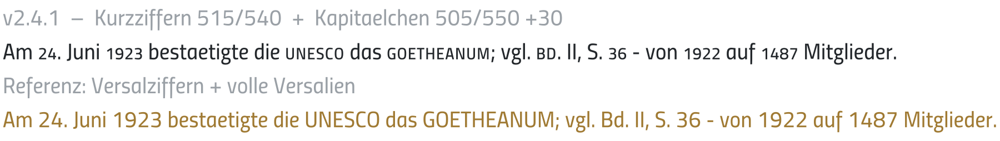
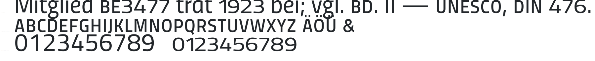

Echt erzeugte Glyphen: Gewicht durch Interpolation zwischen den Familienschnitten (Klar ↔ Laut), Höhe per H/690 skaliert – dasselbe Verfahren, das der Build verwendet.

Oben (schwarz) deine Werte, unten (gold) die Referenz mit vollen Versalziffern + Versalien.
Interaktiv zum Selber-Schieben: werkzeug.html → Abschnitt Mischsatz.
Das ist die tatsächlich geschnittene Schrift (Klar, Test): die Glyphen sind erzeugt, mit HarfBuzz geshaped, die OpenType-Features greifen. Kapitälchen (smcp/c2sc), Kurzziffern (onum) und das Kapitälchen-& sind echt – kein CSS-Trick mehr.

Oben „BE3477" als Einheit (Kapitälchen + Kurzziffern), Mischsatz mit BD · II · UNESCO · DIN; Mitte das Kapitälchen-Alphabet a–z + ä ö ü + &; unten Grund- vs. Kurzziffern.